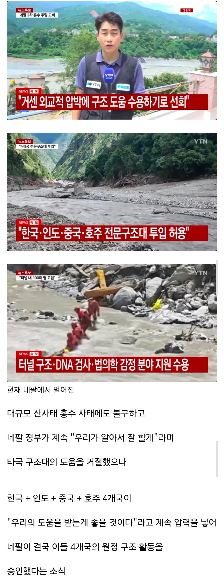
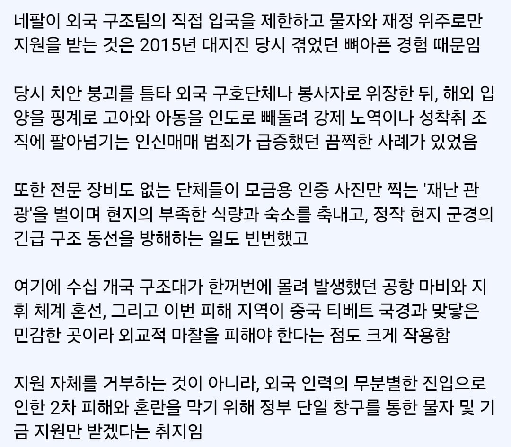

힘든 나라찾아가서 그걸또 빨아먹는 모기새끼들이 있구나ㄷㄷ
영국 일간 가디언은 5일(현지시간) 네팔에서 지진으로 초토화된 지역에 사는 수만 명의 젊은 여성이 남아시아 일대 사창가와 연계된 인신매매단의 타깃이 되고 있다고 보도했다.
관련기사 : Nepal quake survivors face threat from human traffickers supplying sex trade (가디언)
네팔의 비정부기구(NGO)인 '샥티 사무하'의 수니타 다누와르 국장은 가디언과의 인터뷰에서 "지금 (인신매매) 브로커들이 구호라는 이름을 내세워 여성을 납치하거나 유혹하고 있다"면서 "피해자를 구조하고 돌봐주는 것처럼 가장하는 사람들이 있다는 보고가 들어온다"고 밝혔다.
출처 : 허프포스트코리아(https://www.huffingtonpost.kr)
진짜 이상한건 네팔 정부가 아니었구나
네팔 시신사진 진짜 처참하더라.
산사태라서 그냥 묻히고 끝일줄 알았는데
그런 걸 도대체 어디서 어쩌다 본 거니....
믹서기에 조금 갈린거랑 비슷하지
그 유속에 돌이랑 파편 엄청 많았으니
재난이란 단어와 관광이란 단어가 어떻게 붙을수있냐 미친
유튜브 로파이 채팅체널에서 몇달간 네팔인 행세하면서 대화한적 있었음
여러나라 국적사람들 많이 들어오고 레귤러로 오는 사람들도 많았음
특히 인도인들 많았는데
걔네들 내가 네팔사람이라고하면 개무시하는 늬앙스가 드러나더라 ㅈ그나라 주변국들은 대부분 무시하더라
맞음 인도인들은 네팔뿐만 아니라 방글라데시, 파키스탄, 스리랑카, 미얀마 등등 무시가 기본임.
원래 못 사는 나라 애들이 대놓고 타국 무시하지 ㅋㅋㅋㅋ 아프리카, 남미도 인종차별 장난 아니잖아
그럼 중국이나 동남아 무시하는 우리도... 쓰읍
우리도 중국동남아무시하는데 뭐 ㅋㅋ
당장 일본만 해도 쓰나미나 지진 큰거 터지면 대피소에서 성범죄 문제로 골치아프다는데 저런 국가적 재난상황에 외국인들 엄청나게 들어오면 저런게 없을리가 없지
이해할수 없는 결정에는 이유가 있다
중국 인도면 재난상황 끝나도 구호단체가 안떠날수도 ㅋㅋㅋㅋ
ㄹㅇㅋㅋ
중국의 무장 구호단체
서부쪽 무경애들 구조요원으로 둔갑해서 많이 들어갈듯 ㅋㅋ
이웃이 인도, 중국이면 누구라도 국경 틀어막고 볼듯
싫으면 알겠다하지 구호하러갈거임 하고 압박을 넣는건 뭔지랄임?
자국민이 관련되면
자국민 구출해야된데
실종자를 못찾고있음
모르면 글 좀 싸지마
굳이 왜 가겠냐 생각 좀 해봐

인도 중국이랑 국경 맞대고 있다고 하니까 숨막히네 어우
개좆같은 경우를 겪었네
경악스럽지만 10여년 전에 네팔 지진 때 생각하면...
국내에서도 저거 타이틀로 이상한 데서 모금 다 걷어가서 지들끼리 꾸울꺽 한 새끼들이 한 둘이 아님..
솔찍히 그냥 소방청에서 모금했으면
소방에서 그걸 왜 하지?...무슨 생각으로 이런 말을
재난관광 ㄷㄷ ㅅㅂ
중국과 인도는 물자만 받는게 맞긴해
장례식장에서도 인증샷 찍는놈들 생각하면 이해하기 쉬움
개씹새끼들 때문이군
납득이 가는 이유였군
와.. 저 난리통에 인신매매에 사진관광이라니
막을만 하다
이상한 규제는 좆간이 원인이라더니 저것도 비슷한 사례인듯
다섯팔
특정 나라 언급 안했는데 왜 확정적으로 한나라가 떠오르냐 ㅋㅋ
네팔은 원래 지진 없이도 매년 수천명씩 인신매매 당하는 나라임